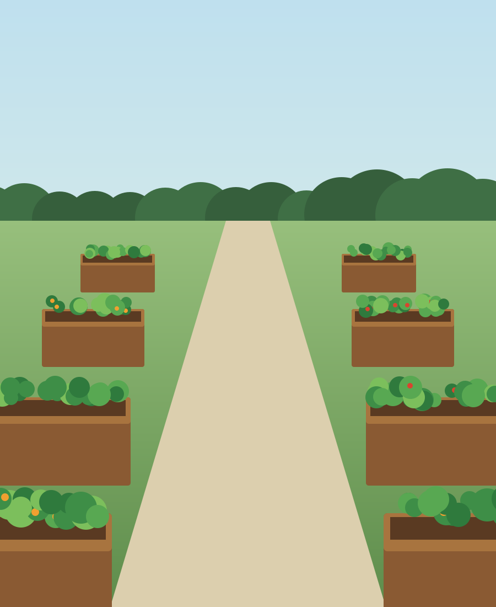

Annual report to members
What we grew, what it cost, and what changes in 2027
2026 was the garden's biggest season since it opened. Members logged 4.6 tonnes of produce, a quarter of it went to the food bank, and for the first time since 2019 nobody is waiting for a plot.
produce logged at the shed, up from 3.1 t in 2025
members, up from 168
volunteer hours on shared jobs
of plots let: 58 of 64
The four rain tanks fitted in February cut our mains water by about a third over the summer. Six raised beds by the east gate opened in May, and eleven members now garden from a seat. We spent $10,500 against a budget of $10,650, and the bank balance rose by $500 over the year.
The committee proposes a plot fee of $55 for 2027, up from $50, to pay for the composting toilet and the polytunnel. Members vote on it at the meeting (see The 2027 fee).
Harvest, sharing and water, from the shed log and the meter readings.
Members weigh what they take home at the shed scale and write it in the logThe log counts what members chose to weigh, so the true harvest is higher. About one plot in six logged nothing in June, when the scale was being repaired.. The season ran from April to October, and August was the peak, at 1,140 kg.
Tomatoes, courgettes and beans made up most of the weight, as in every year since 2021. The new beds by the east gate added 180 kg on their own, mostly salad and herbs.
Members gave 1.2 tonnes of fresh produce to the Northside Food Bank, about 2,400 mealsMeals are estimated at 500 grams of produce each, the food bank's own measure.. Volunteers made 31 Saturday drop-offs, one every week from May, and the food bank now serves about 140 households a week.
The rain tanks hold 20,000 litres in all. From June to September the garden used about a third less mains water than in 2025, and the water bill came in $300 under budget.
Twelve soil sensors report every hour. Each morning the shed screen lists the beds below 30% moisture, so volunteers water only those. The script is short:
def beds_to_water(readings, dry=30):
"""Beds whose soil moisture fell below `dry` percent."""
latest = {}
for r in readings: # one reading per sensor per hour
latest[r.bed] = r.moisture
return sorted(b for b, m in latest.items() if m < dry)Two years of building work, with one more to go.
Before May, every plot was at ground level, so members who use a wheelchair or can't kneel had nothing they could work. The six new beds stand 75 cm high on firm, wide paths, 20 metres from the car park. The tap and the tool shed are within reach of every bed, and the cherry tree shades them after 3 pm.

Booking a raised bed
Two of the six beds are kept for new members who need them. Ask any committee member, or leave a note in the shed box.
Seven of the ten winter jobs are done, two are booked and one was dropped.
Income for the year was $11,000. Grants paid for almost half of it: the city's water storage grant and a smaller grant from the county for the raised beds.
We spent $10,500, $150 under budget. The raised beds and the shed each cost $200 more than planned, and lower water bills made up the difference.
| Item | Budget | Spent | Left over |
|---|---|---|---|
| Rain tanks and fitting | $4,000 | $3,900 | $100 |
| Raised beds | $2,400 | $2,600 | −$200 |
| Tool shed and tools | $1,500 | $1,700 | −$200 |
| Seeds and plants | $1,000 | $900 | $100 |
| Water bills | $900 | $600 | $300 |
| Insurance and workshops | $850 | $800 | $50 |
| Total | $10,650 | $10,500 | $150 |
The bank balance rose from $2,000 to $2,500. For 2027 we have raised the full cost of the fruit trees, 60% of the composting toilet and 35% of the polytunnelPledges count once the money is in the bank. Two pledges for the polytunnel, $400 in all, are not counted yet..
The committee proposes a plot fee of $55 for 2027, up from $50. At 58 plots, the extra $5 raises $290 a year, which closes the gap on the composting toilet by the end of 2027.
How the vote works
Each plot holder has one vote. Members who can't come can vote by post or email to the secretary by 12 November.
Plots let at the end of each season since the garden opened.
| Season | Plots | Let | Members | Waiting list |
|---|---|---|---|---|
| 2021 | 48 | 40 | 96 | 22 |
| 2022 | 48 | 44 | 118 | 17 |
| 2023 | 56 | 49 | 131 | 12 |
| 2024 | 56 | 52 | 150 | 9 |
| 2025 | 64 | 55 | 168 | 4 |
| 2026 | 64 | 58 | 212 | 0 |